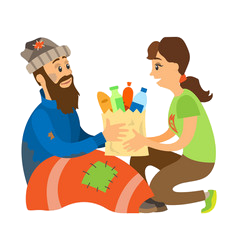
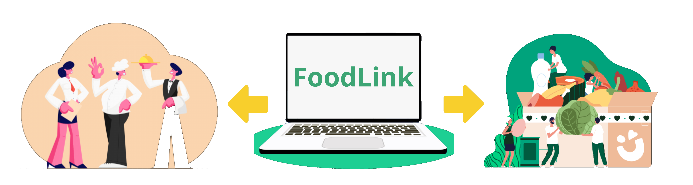

O problema que a solução irá resolver

Muitos mercados e estabelecimentos comerciais têm um excesso de alimentos que, por diversos motivos, não são vendidos e acabam sendo desperdiçados.
Essa solução visa reduzir o desperdício de alimentos ao permitir que os estabelecimentos façam doações diretas para as ONGs, evitando que a comida seja descartada.
Público Alvo

O público-alvo dessa solução são os mercados e estabelecimentos comerciais que possuem excedentes de alimentos e desejam contribuir para a redução do desperdício.
As ONGs que trabalham com ações sociais e enfrentam dificuldades em adquirir alimentos também são parte do público-alvo. Essa solução conecta esses dois grupos, facilitando o processo de doação.
Tecnologia

A solução será desenvolvida utilizando tecnologias web modernas, como HTML, CSS e JavaScript para a construção da interface e interações com o usuário.
Também serão utilizadas tecnologias de back-end, como um banco de dados para armazenar informações sobre os mercados e ONGs cadastrados, e uma linguagem de programação, como Python ou Node.js, para desenvolver a lógica de negócios e gerenciar as doações.
Objetivos
Os principais objetivos dessa solução são reduzir o desperdício de alimentos, facilitar o processo de doação e contribuir para a segurança alimentar de pessoas em situação de vulnerabilidade.
Além disso, busca promover a conscientização sobre o desperdício de alimentos e incentivar práticas mais sustentáveis na cadeia de abastecimento, estabelecendo parcerias duradouras entre mercados e ONGs.
Benefícios

A solução oferece benefícios como a redução do desperdício de alimentos, maior eficiência nas doações, ampliação do alcance das ONGs e melhoria na qualidade das doações.
Além disso, fortalece a responsabilidade social das empresas, melhora a segurança alimentar de pessoas em situação de vulnerabilidade e promove uma sociedade mais sustentável.
Solução
A nossa solução, chamada "SiteDeIntermédio", é um site que atua como intermediário entre mercados e ONGs, facilitando a doação de alimentos excedentes.
Por meio do SiteDeIntermédio, os mercados podem cadastrar os alimentos disponíveis para doação, especificando quantidade, validade e outros detalhes relevantes.
As ONGs, por sua vez, podem pesquisar e solicitar os alimentos de que necessitam, encontrando opções próximas e adequadas às suas demandas específicas.